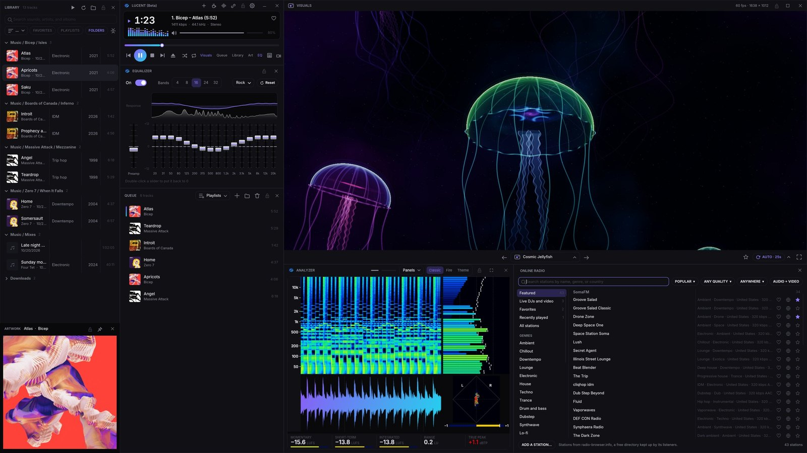
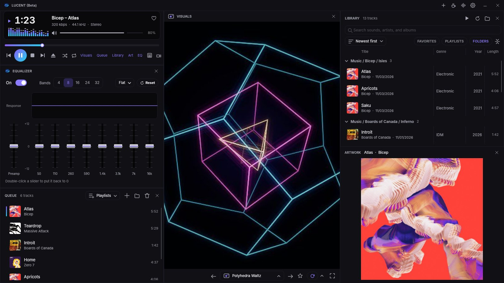
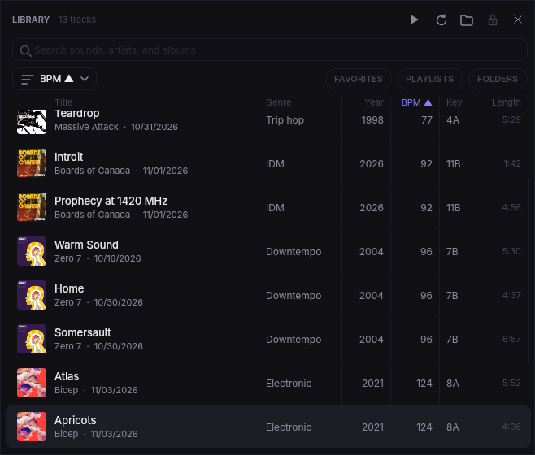
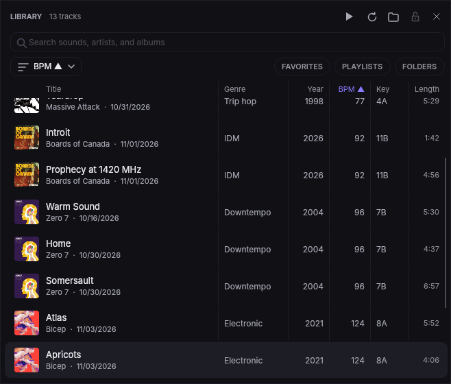
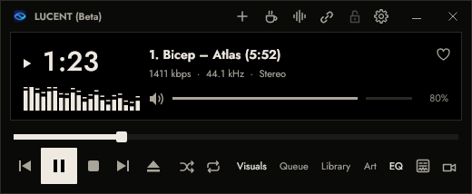
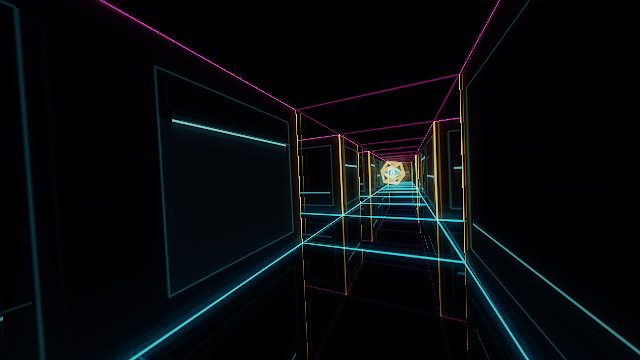
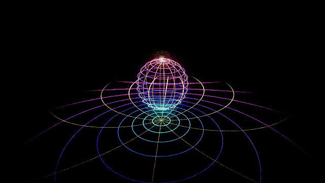
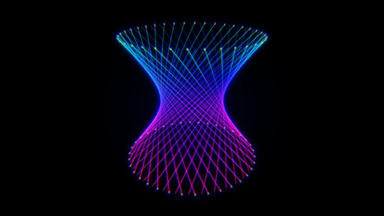
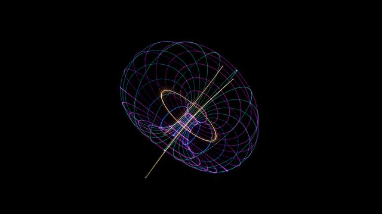

Lucent 1.2 Beta
Windows and MacEverything can live in one window now, playlists can mix Spotify with your own files, and text is easier to read. There are thirteen new visuals and a long list of fixes.
Everything in one window
The player, visuals, library, queue, equalizer, and artwork can now sit together as panels in one window, under one title bar. Drag a panel onto another to swap them, drag the lines between panels to resize them, and saved layouts remember how you set it up. Press U to switch between one window and separate windows.




Easier-to-read library, with columns you can resize
Artist names, dates, and other secondary text are brighter, and Windows draws small text sharper. Library columns now resize by dragging the lines between their headings, you can pick columns from any right-click menu in the list, and newest first works inside folders.




A new skin, Linework, and a slimmer logo
Linework is a quiet black and warm white skin, with its own Ivory theme. Pick it under Skins. The usual Lucent look stays the default, and the app wears the new slim lens logo.

Playlists that mix Spotify and your files
A Lucent playlist can hold Spotify songs and your own music side by side. Add songs from the playlist itself, by dropping music on it, or straight into a new Spotify playlist. Saved playlists also show the library's tag columns and sort by them.
The equalizer works on Spotify and other apps
Turn it on, and the equalizer shapes the sound of Spotify and other streaming apps, not just Lucent's own music. The volume bar now sets your computer's volume, so it sounds the same whatever is playing, while the visuals still hear every app.
Thirteen new visuals, and you can play with them
New originals include Neon Maze, Lucent Bounce, Riemann Sphere, Hyperboloid, Dupin Cyclide, Loxodrome, Tetra Vortex, Boy's Surface, Enneper Bloom, Epicycle Rosette, Polytope Bloom, Superformula, and Spiral Shell. Abyssal Glow now drifts past glowing radiolarians, Quaternion Julia swells with the music, and a dozen more got a fresh 2.0 look. On particle visuals, move the mouse to push the particles, click and hold to gather them, and drag to grab and throw them. You can turn that off in the visuals menu.




Also new
- Power choice for the visuals: Auto, Smoothest, Balanced, or Power saver.
- Advanced menu in the visuals' right-click menu, to see, edit, and recompile a visual's shader.
- Drag the equalizer's curve up or down to move the slider under it.
- Tooltips explain the options in the visuals menu.
- Adding a folder shows its progress while Lucent reads it.
- Visuals move more smoothly with the beat: they swell instead of snapping, and fly-throughs ease forward instead of jolting.
- The equalizer tells you when a streaming app is playing its own sound.
- Classic skins frame every window, and the Retro skin is now called Verdes.
- Add to playlist and Share work on songs in a playlist opened in the library.
Fixed
Windows and layout
- Windows stay put and line up flush when you switch skins or turn one window on and off.
- The player keeps its size unless you drag its own edge. Ctrl+0 (Cmd+0 on Mac) puts it back.
- Saved layouts open on the player's screen, and the default layout puts a stretched player back to its usual size.
- Leaving full screen keeps the windows together around the player, and the equalizer fills the player's column in full screen.
- One window no longer freezes with a big library or queue, and the mouse wheel scrolls lists there instead of changing the volume.
- Online radio opens in one window without a blank window over it.
- Name and question boxes open centered on Lucent.
- Dragging window edges between docked windows is smooth and stops at locked ones.
- Lucent's own title bar buttons stay after switching skins.
- The classic skin playlist keeps its bottom bar below the songs.
- The equalizer takes a new skin's height straight away.Windows
- Windows go back where they were after one window is turned off, including at full screen.Mac
Spotify and streaming apps
- Song changes from Spotify and other apps show straight away.
- The visuals pick up Spotify's sound again on their own if listening stalls.
- When Spotify asks Lucent to wait, Lucent waits as long as asked, sends songs you pick to the Spotify app meanwhile, and asks Spotify less often while idle.
- The analyzer and meters keep a steady frame rate while another app plays, and the volume bar no longer changes what the analyzer shows.
Visuals
- Chrome Blobs and six other visuals no longer flicker the longer they play.
- Visuals keep their full frame rate while another app has focus.
- Volcanic Eruption runs much faster.
- MilkDrop presets that were missing some effects draw them again.
- MilkDrop presets draw all their waves and shapes.Windows
Everything else
- Updates install quietly when Lucent closes, without the UPDATE button coming back after every build.
- Updates install even when a File Explorer window is open in Lucent's folder.Windows
- Settings survive a crash in the middle of saving.
- Saving a song's info waits out a briefly locked file, and says which program is holding it.
- Damaged audio files, skins, and radio streams are handled more safely.
- Long playlists glide smoothly all the way to the playing song.
- A video played again from partway after it ended shows the right time.
- The seek bar fills right up to its handle, and menu tooltips close when their submenu opens.